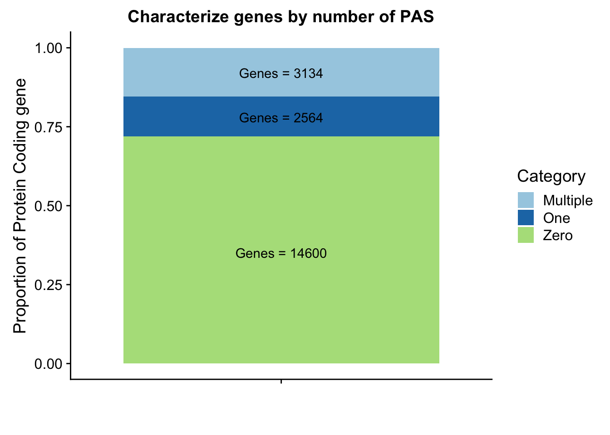

Data Processing Figures
Briana Mittleman
8/28/2018
Last updated: 2019-02-15
Checks: 6 0
Knit directory: threeprimeseq/analysis/
This reproducible R Markdown analysis was created with workflowr (version 1.2.0). The Report tab describes the reproducibility checks that were applied when the results were created. The Past versions tab lists the development history.
Great! Since the R Markdown file has been committed to the Git repository, you know the exact version of the code that produced these results.
Great job! The global environment was empty. Objects defined in the global environment can affect the analysis in your R Markdown file in unknown ways. For reproduciblity it’s best to always run the code in an empty environment.
The command set.seed(12345) was run prior to running the code in the R Markdown file. Setting a seed ensures that any results that rely on randomness, e.g. subsampling or permutations, are reproducible.
Great job! Recording the operating system, R version, and package versions is critical for reproducibility.
Nice! There were no cached chunks for this analysis, so you can be confident that you successfully produced the results during this run.
Great! You are using Git for version control. Tracking code development and connecting the code version to the results is critical for reproducibility. The version displayed above was the version of the Git repository at the time these results were generated.
Note that you need to be careful to ensure that all relevant files for the analysis have been committed to Git prior to generating the results (you can use wflow_publish or wflow_git_commit). workflowr only checks the R Markdown file, but you know if there are other scripts or data files that it depends on. Below is the status of the Git repository when the results were generated:
Ignored files:
Ignored: .DS_Store
Ignored: .Rhistory
Ignored: .Rproj.user/
Ignored: data/.DS_Store
Ignored: data/perm_QTL_trans_noMP_5percov/
Ignored: output/.DS_Store
Untracked files:
Untracked: KalistoAbundance18486.txt
Untracked: analysis/4suDataIGV.Rmd
Untracked: analysis/DirectionapaQTL.Rmd
Untracked: analysis/EvaleQTLs.Rmd
Untracked: analysis/YL_QTL_test.Rmd
Untracked: analysis/ncbiRefSeq_sm.sort.mRNA.bed
Untracked: analysis/snake.config.notes.Rmd
Untracked: analysis/verifyBAM.Rmd
Untracked: analysis/verifybam_dubs.Rmd
Untracked: code/PeaksToCoverPerReads.py
Untracked: code/strober_pc_pve_heatmap_func.R
Untracked: data/18486.genecov.txt
Untracked: data/APApeaksYL.total.inbrain.bed
Untracked: data/ApaQTLs/
Untracked: data/ChromHmmOverlap/
Untracked: data/DistTXN2Peak_genelocAnno/
Untracked: data/GM12878.chromHMM.bed
Untracked: data/GM12878.chromHMM.txt
Untracked: data/LianoglouLCL/
Untracked: data/LocusZoom/
Untracked: data/NuclearApaQTLs.txt
Untracked: data/PeakCounts/
Untracked: data/PeakCounts_noMP_5perc/
Untracked: data/PeakCounts_noMP_genelocanno/
Untracked: data/PeakUsage/
Untracked: data/PeakUsage_noMP/
Untracked: data/PeakUsage_noMP_GeneLocAnno/
Untracked: data/PeaksUsed/
Untracked: data/PeaksUsed_noMP_5percCov/
Untracked: data/RNAkalisto/
Untracked: data/RefSeq_annotations/
Untracked: data/TotalApaQTLs.txt
Untracked: data/Totalpeaks_filtered_clean.bed
Untracked: data/UnderstandPeaksQC/
Untracked: data/WASP_STAT/
Untracked: data/YL-SP-18486-T-combined-genecov.txt
Untracked: data/YL-SP-18486-T_S9_R1_001-genecov.txt
Untracked: data/YL_QTL_test/
Untracked: data/apaExamp/
Untracked: data/apaQTL_examp_noMP/
Untracked: data/bedgraph_peaks/
Untracked: data/bin200.5.T.nuccov.bed
Untracked: data/bin200.Anuccov.bed
Untracked: data/bin200.nuccov.bed
Untracked: data/clean_peaks/
Untracked: data/comb_map_stats.csv
Untracked: data/comb_map_stats.xlsx
Untracked: data/comb_map_stats_39ind.csv
Untracked: data/combined_reads_mapped_three_prime_seq.csv
Untracked: data/diff_iso_GeneLocAnno/
Untracked: data/diff_iso_proc/
Untracked: data/diff_iso_trans/
Untracked: data/ensemble_to_genename.txt
Untracked: data/example_gene_peakQuant/
Untracked: data/explainProtVar/
Untracked: data/filtPeakOppstrand_cov_noMP_GeneLocAnno_5perc/
Untracked: data/filtered_APApeaks_merged_allchrom_refseqTrans.closest2End.bed
Untracked: data/filtered_APApeaks_merged_allchrom_refseqTrans.closest2End.noties.bed
Untracked: data/first50lines_closest.txt
Untracked: data/gencov.test.csv
Untracked: data/gencov.test.txt
Untracked: data/gencov_zero.test.csv
Untracked: data/gencov_zero.test.txt
Untracked: data/gene_cov/
Untracked: data/joined
Untracked: data/leafcutter/
Untracked: data/merged_combined_YL-SP-threeprimeseq.bg
Untracked: data/molPheno_noMP/
Untracked: data/mol_overlap/
Untracked: data/mol_pheno/
Untracked: data/nom_QTL/
Untracked: data/nom_QTL_opp/
Untracked: data/nom_QTL_trans/
Untracked: data/nuc6up/
Untracked: data/nuc_10up/
Untracked: data/other_qtls/
Untracked: data/pQTL_otherphen/
Untracked: data/peakPerRefSeqGene/
Untracked: data/perm_QTL/
Untracked: data/perm_QTL_GeneLocAnno_noMP_5percov/
Untracked: data/perm_QTL_GeneLocAnno_noMP_5percov_3UTR/
Untracked: data/perm_QTL_opp/
Untracked: data/perm_QTL_trans/
Untracked: data/perm_QTL_trans_filt/
Untracked: data/protAndAPAAndExplmRes.Rda
Untracked: data/protAndAPAlmRes.Rda
Untracked: data/protAndExpressionlmRes.Rda
Untracked: data/reads_mapped_three_prime_seq.csv
Untracked: data/smash.cov.results.bed
Untracked: data/smash.cov.results.csv
Untracked: data/smash.cov.results.txt
Untracked: data/smash_testregion/
Untracked: data/ssFC200.cov.bed
Untracked: data/temp.file1
Untracked: data/temp.file2
Untracked: data/temp.gencov.test.txt
Untracked: data/temp.gencov_zero.test.txt
Untracked: data/threePrimeSeqMetaData.csv
Untracked: data/threePrimeSeqMetaData55Ind.txt
Untracked: data/threePrimeSeqMetaData55Ind.xlsx
Untracked: data/threePrimeSeqMetaData55Ind_noDup.txt
Untracked: data/threePrimeSeqMetaData55Ind_noDup.xlsx
Untracked: data/threePrimeSeqMetaData55Ind_noDup_WASPMAP.txt
Untracked: data/threePrimeSeqMetaData55Ind_noDup_WASPMAP.xlsx
Untracked: output/picard/
Untracked: output/plots/
Untracked: output/qual.fig2.pdf
Unstaged changes:
Modified: analysis/28ind.peak.explore.Rmd
Modified: analysis/CompareLianoglouData.Rmd
Modified: analysis/NewPeakPostMP.Rmd
Modified: analysis/apaQTLoverlapGWAS.Rmd
Modified: analysis/cleanupdtseq.internalpriming.Rmd
Modified: analysis/coloc_apaQTLs_protQTLs.Rmd
Modified: analysis/dif.iso.usage.leafcutter.Rmd
Modified: analysis/diff_iso_pipeline.Rmd
Modified: analysis/explainpQTLs.Rmd
Modified: analysis/explore.filters.Rmd
Modified: analysis/flash2mash.Rmd
Modified: analysis/mispriming_approach.Rmd
Modified: analysis/overlapMolQTL.Rmd
Modified: analysis/overlapMolQTL.opposite.Rmd
Modified: analysis/overlap_qtls.Rmd
Modified: analysis/peakOverlap_oppstrand.Rmd
Modified: analysis/peakQCPPlots.Rmd
Modified: analysis/pheno.leaf.comb.Rmd
Modified: analysis/pipeline_55Ind.Rmd
Modified: analysis/swarmPlots_QTLs.Rmd
Modified: analysis/test.max2.Rmd
Modified: analysis/test.smash.Rmd
Modified: analysis/understandPeaks.Rmd
Modified: code/Snakefile
Note that any generated files, e.g. HTML, png, CSS, etc., are not included in this status report because it is ok for generated content to have uncommitted changes.
These are the previous versions of the R Markdown and HTML files. If you’ve configured a remote Git repository (see ?wflow_git_remote), click on the hyperlinks in the table below to view them.
| File | Version | Author | Date | Message |
|---|---|---|---|---|
| html | 9ee7270 | Briana Mittleman | 2018-09-04 | Build site. |
| Rmd | deaa5b0 | Briana Mittleman | 2018-09-04 | compare TPM for genes with no peaks |
| html | 2e39f7a | Briana Mittleman | 2018-08-30 | Build site. |
| Rmd | a2a7cd9 | Briana Mittleman | 2018-08-30 | add kalisto code |
| html | cbec2f6 | Briana Mittleman | 2018-08-29 | Build site. |
| Rmd | 6b818cb | Briana Mittleman | 2018-08-29 | try gencode anno |
| html | c6dc97b | brimittleman | 2018-08-28 | Build site. |
| Rmd | fa818a1 | brimittleman | 2018-08-28 | first processing figure |
I will use this analysis to work on vizualising some of the processing steps of this analysis.
Peaks per gene
I want to create a figure similar to the one I created in https://brimittleman.github.io/comparative_threeprime/characterize.ortho.peaks.html. I will use the count distinct function from bedtools map. For this I am using the RefSeq mRNA annotations.
#!/bin/bash
#SBATCH --job-name=refseq_countdistinct
#SBATCH --account=pi-yangili1
#SBATCH --time=24:00:00
#SBATCH --output=refseq_countdistinct.out
#SBATCH --error=refseq_countdistinct.err
#SBATCH --partition=broadwl
#SBATCH --mem=12G
#SBATCH --mail-type=END
bedtools map -c 4 -s -o count_distinct -a /project2/gilad/briana/genome_anotation_data/refseq.ProteinCoding.noCHR.bed -b /project2/gilad/briana/threeprimeseq/data/mergedPeaks_comb/filtered_APApeaks_merged_allchrom.named.fixed.bed > /project2/gilad/briana/threeprimeseq/data/peakPerRefseqGene/filtered_APApeaks_perRefseqGene.txt
#try opp strand
bedtools map -c 4 -S -o count_distinct -a /project2/gilad/briana/genome_anotation_data/refseq.ProteinCoding.noCHR.bed -b /project2/gilad/briana/threeprimeseq/data/mergedPeaks_comb/filtered_APApeaks_merged_allchrom.named.fixed.bed > /project2/gilad/briana/threeprimeseq/data/peakPerRefseqGene/filtered_APApeaks_perRefseqGene_oppStrand.txt
library(tidyverse)── Attaching packages ───────────────────────────────────────────────────────────── tidyverse 1.2.1 ──✔ ggplot2 3.0.0 ✔ purrr 0.2.5
✔ tibble 1.4.2 ✔ dplyr 0.7.6
✔ tidyr 0.8.1 ✔ stringr 1.4.0
✔ readr 1.1.1 ✔ forcats 0.3.0Warning: package 'stringr' was built under R version 3.5.2── Conflicts ──────────────────────────────────────────────────────────────── tidyverse_conflicts() ──
✖ dplyr::filter() masks stats::filter()
✖ dplyr::lag() masks stats::lag()library(workflowr)This is workflowr version 1.2.0
Run ?workflowr for help getting startedlibrary(reshape2)
Attaching package: 'reshape2'The following object is masked from 'package:tidyr':
smithslibrary(cowplot)
Attaching package: 'cowplot'The following object is masked from 'package:ggplot2':
ggsavenames=c("Chr", "Start", "End", "Name", "Score", "Strand", "numPeaks")
peakpergene=read.table("../data/peakPerRefSeqGene/filtered_APApeaks_perRefseqGene.txt", stringsAsFactors = F, header = F, col.names = names) %>% mutate(onePeak=ifelse(numPeaks==1, 1, 0 )) %>% mutate(multPeaks=ifelse(numPeaks > 1, 1, 0 ))genes1peak=sum(peakpergene$onePeak)/nrow(peakpergene)
genesMultpeak=sum(peakpergene$multPeaks)/nrow(peakpergene)
genes0peak= 1- genes1peak - genesMultpeak
perPeak= c(round(genes0peak,digits = 3), round(genes1peak,digits = 3),round(genesMultpeak, digits = 3))
Category=c("Zero", "One", "Multiple")
perPeakdf=as.data.frame(cbind(Category,as.numeric(perPeak)))Plot these proportions:
lab1=paste("Genes =", genes0peak*nrow(peakpergene), sep=" ")
lab2=paste("Genes =", sum(peakpergene$onePeak), sep=" ")
lab3=paste("Genes =", sum(peakpergene$multPeaks), sep=" ")
genepeakplot=ggplot(perPeakdf, aes(x="", y=perPeak, fill=Category)) + geom_bar(stat="identity")+ labs(title="Characterize genes by number of PAS", y="Proportion of Protein Coding gene", x="")+ scale_fill_brewer(palette="Paired") + coord_cartesian(ylim=c(0,1)) + annotate("text", x="", y= .35, label=lab1) + annotate("text", x="", y= .78, label=lab2) + annotate("text", x="", y= .92, label=lab3)
genepeakplot
This includes for than 1 isoform for different genes. I am going to go back to the original refseq file and resegment it. Column 13 is the gene name. Column 2 needs to start with NM because that is mRNA.
grep "NM" ncbiRefSeq.txt | awk '{print $3 "\t" $5 "\t" $6 "\t" $2 "\t" $13 "\t" $4}' > ncbiRefSeq.mRNA.named.bedI can write a script that writes only the longest isoform for each gene.
outfile=open("refseq.ProteinCoding.bed", "w")
infile=open("ncbiRefSeq.mRNA.named.bed", "r")
lines=infile.readlines()
lot_lines=len(lines)
for n,ln in enumerate(lines):
chrom, start, end, mRNA, gene, strand = ln.split()
#if first line
if n == 0:
#first line condition
SE_list=[]
cur_gene=gene
SE_list.append(int(start))
SE_list.append(int(end))
elif n == lot_lines-1:
#last line condition
if gene == cur_gene:
SE_list.append(int(start))
SE_list.append(int(end))
SE_list.sort()
outfile.write("%s\t%d\t%d\t%s\t.\t%s\n"%(chrom, SE_list[0], SE_list[-1], gene, strand))
else:
outfile.write("%s\t%d\t%d\t%s\t.\t%s\n"%(chrom, int(start), int(end), gene, strand))
elif gene == cur_gene:
SE_list.append(int(start))
SE_list.append(int(end))
elif gene != cur_gene:
#write out the last line but with the start end from the SE list
prevline=lines[n-1]
chrom2, start2, end2, mRNA2, gene2, strand2 = prevline.split()
outfile.write("%s\t%d\t%d\t%s\t.\t%s\n"%(chrom2, SE_list[0], SE_list[-1], gene2, strand2))
cur_gene=gene
SE_list=[int(start), int(end)]
outfile.close()
I can check this by maknig sure there is 1 line for all of the unique names in the in file.
awk '{print $5}' ncbiRefSeq.mRNA.named.bed | sort | uniq | wc -l
#19243
wc -l refseq.ProteinCoding.bed
#20298
sed 's/^chr//' refseq.ProteinCoding.bed > refseq.ProteinCoding.noCHR.bedThere is still a problem with the script. The problem is when the same gene name is on extra haplotypes. I could remove all of the lines in the file that have _ in the first column. These are on contigs or specfic haplotypes. They will not map to our peaks anyway. I also need to remove the chr.
This still seems lower than previos APA estimates. I had used gencode estimates before. I am gonig to run this analysis again with those gene.
#!/bin/bash
#SBATCH --job-name=gencode_countdistinct
#SBATCH --account=pi-yangili1
#SBATCH --time=24:00:00
#SBATCH --output=gencode_countdistinct.out
#SBATCH --error=gencode_countdistinct.err
#SBATCH --partition=broadwl
#SBATCH --mem=12G
#SBATCH --mail-type=END
bedtools map -c 4 -s -o count_distinct -a /project2/gilad/briana/genome_anotation_data/gencode.v19.annotation.proteincodinggene.sort.bed -b /project2/gilad/briana/threeprimeseq/data/mergedPeaks_comb/filtered_APApeaks_merged_allchrom.named.fixed.bed >
Gpeakpergene=read.table("../data/peakPerRefSeqGene/filtered_APApeaks_perGencodeGene.txt", stringsAsFactors = F, header = F, col.names = names) %>% mutate(onePeak=ifelse(numPeaks==1, 1, 0 )) %>% mutate(multPeaks=ifelse(numPeaks > 1, 1, 0 ))Ggenes1peak=sum(Gpeakpergene$onePeak)/nrow(Gpeakpergene)
GgenesMultpeak=sum(Gpeakpergene$multPeaks)/nrow(Gpeakpergene)
Ggenes0peak= 1- Ggenes1peak - GgenesMultpeak
GperPeak= c(round(Ggenes0peak,digits = 3), round(Ggenes1peak,digits = 3),round(GgenesMultpeak, digits = 3))
GperPeakdf=as.data.frame(cbind(Category,as.numeric(GperPeak)))Plot these proportions:
Glab1=paste("Genes =", Ggenes0peak*nrow(Gpeakpergene), sep=" ")
Glab2=paste("Genes =", sum(Gpeakpergene$onePeak), sep=" ")
Glab3=paste("Genes =", sum(Gpeakpergene$multPeaks), sep=" ")
Ggenepeakplot=ggplot(GperPeakdf, aes(x="", y=perPeak, fill=Category)) + geom_bar(stat="identity")+ labs(title="Characterize Gencode genes by number of PAS", y="Proportion of Protein Coding gene", x="")+ scale_fill_brewer(palette="Paired") + coord_cartesian(ylim=c(0,1)) + annotate("text", x="", y= .35, label=Glab1) + annotate("text", x="", y= .78, label=Glab2) + annotate("text", x="", y= .92, label=Glab3)
Ggenepeakplot
| Version | Author | Date |
|---|---|---|
| cbec2f6 | Briana Mittleman | 2018-08-29 |
These results are still lower than expected. This is because all of my previous analysis mapped the genes to the peaks as which were closest in the upstream direction. Here I am saying the peak must overlap the gene.
I should again look at some of the genes with the top counts in RNA seq and the 0 peaks.
I am going to run feaureCounts on 18486 guevardis with the refseq annotation with the named genes. I need to make this a SAF file.
from misc_helper import *
fout = file("/project2/gilad/briana/genome_anotation_data/refseq.ProteinCoding.noCHR.SAF",'w')
fout.write("GeneID\tChr\tStart\tEnd\tStrand\n")
for ln in open("/project2/gilad/briana/genome_anotation_data/refseq.ProteinCoding.noCHR.bed"):
chrom, start, end, gene, score, strand = ln.split()
start_i=int(start)
end_i=int(end)
fout.write("%s\t%s\t%d\t%d\t%s\n"%(gene, chrom, start_i, end_i, strand))
fout.close()#!/bin/bash
#SBATCH --job-name=fc_RNAseq_refseq
#SBATCH --account=pi-yangili1
#SBATCH --time=24:00:00
#SBATCH --output=fc_RNAseq_refseq.out
#SBATCH --error=fc_RNAseq_refseq.err
#SBATCH --partition=broadwl
#SBATCH --mem=12G
#SBATCH --mail-type=END
module load Anaconda3
source activate three-prime-env
# outdir: /project2/gilad/briana/comparitive_threeprime/data/PeakwGene_quant
featureCounts -a /project2/gilad/briana/genome_anotation_data/refseq.ProteinCoding.noCHR.SAF -F SAF -o /project2/gilad/briana/threeprimeseq/data/peakPerRefseqGene/refseq18486exp.quant /project2/yangili1/LCL/RNAseqGeuvadisBams/RNAseqGeuvadis_STAR_18486.final.bam -s 1Now I can upload the results and compare them to the peak counts in these genes.
namesRNA=c("Name", "Chr", "Start", "End", "Strand", "Length", "RNAseq")
RNAseqrefseq=read.table("../data/peakPerRefSeqGene/refseq18486exp.quant", header=T, stringsAsFactors = F, col.names = namesRNA)
RNAseqrefseq$Start=as.integer(RNAseqrefseq$Start)Warning: NAs introduced by coercionRNAseqrefseq$End=as.integer(RNAseqrefseq$End)Warning: NAs introduced by coercionJoin the peakpergene dataframe with this dataframe.
refPeakandRNA=peakpergene %>% inner_join(RNAseqrefseq, by=c("Name", "Chr", "Start", "End", "Strand"))
refPeakandRNA_noPeak=refPeakandRNA %>% filter(RNAseq!=0) %>% filter(numPeaks==0) %>% arrange(desc(RNAseq)) %>% select(Name, Start, End, Chr, RNAseq, numPeaks)This doesnt make much sense. Seems like the peaks are on the opposite strand for the top genes. I am gonig to force opposite strandedness and see what happens.
Opeakpergene=read.table("../data/peakPerRefSeqGene/filtered_APApeaks_perRefseqGene_oppStrand.txt", stringsAsFactors = F, header = F, col.names = names) %>% mutate(onePeak=ifelse(numPeaks==1, 1, 0 )) %>% mutate(multPeaks=ifelse(numPeaks > 1, 1, 0 ))Ogenes1peak=sum(Opeakpergene$onePeak)/nrow(Opeakpergene)
OgenesMultpeak=sum(Opeakpergene$multPeaks)/nrow(Opeakpergene)
Ogenes0peak= 1- Ogenes1peak - OgenesMultpeak
OperPeak= c(round(Ogenes0peak,digits = 3), round(Ogenes1peak,digits = 3),round(OgenesMultpeak, digits = 3))
OperPeakdf=as.data.frame(cbind(Category,OperPeak))
OperPeakdf$OperPeak=as.numeric(as.character(OperPeakdf$OperPeak))Plot these proportions:
Olab1=paste("Genes =", Ogenes0peak*nrow(Opeakpergene), sep=" ")
Olab2=paste("Genes =", sum(Opeakpergene$onePeak), sep=" ")
Olab3=paste("Genes =", sum(Opeakpergene$multPeaks), sep=" ")
Ogenepeakplot=ggplot(OperPeakdf, aes(x="", y=OperPeak, by=Category, fill=Category)) + geom_bar(stat="identity")+ labs(title="Characterize Refseq genes by number of PAS- Oppstrand", y="Proportion of Protein Coding gene", x="")+ scale_fill_brewer(palette="Paired") + coord_cartesian(ylim=c(0,1)) + annotate("text", x="", y= .2, label=Olab1) + annotate("text", x="", y= .4, label=Olab2) + annotate("text", x="", y= .9, label=Olab3)
Ogenepeakplot
| Version | Author | Date |
|---|---|---|
| 2e39f7a | Briana Mittleman | 2018-08-30 |
This makes more sense now.
refPeakandRNA_withO=Opeakpergene %>% inner_join(RNAseqrefseq, by=c("Name", "Chr", "Start", "End", "Strand"))
refPeakandRNA_noPeakw_withO=refPeakandRNA_withO %>% filter(RNAseq!=0) %>% filter(numPeaks==0) %>% arrange(desc(RNAseq)) %>% select(Name, Start, End, Chr, RNAseq, numPeaks)plot(sort(log10(refPeakandRNA_withO$RNAseq), decreasing = T), main="Distribution of RNA expression counts 18486", ylab="log10 Gene count", xlab="Refseq Gene")
points(sort(log10(refPeakandRNA_noPeakw_withO$RNAseq), decreasing = T), col="Red")
legend("topright", legend=c("All Gene", "Gene without Peak"), col=c("black", "red"),pch=19)
| Version | Author | Date |
|---|---|---|
| 2e39f7a | Briana Mittleman | 2018-08-30 |
Run Kalisto on the this RNA seq line and look at this plot with the kalisto output expression TPM. I added Kallisto to the three-prime-env.
Kallisto step:
- make index: kallisto_index18486.sh
This needs to be based on a transcriptome. I will use the protein coding transcripts from https://www.gencodegenes.org/releases/28lift37.html.
#!/bin/bash
#SBATCH --job-name=kallisto_index18486
#SBATCH --account=pi-yangili1
#SBATCH --time=24:00:00
#SBATCH --output=kallisto_index18486.out
#SBATCH --error=kallisto_index18486.err
#SBATCH --partition=broadwl
#SBATCH --mem=50G
#SBATCH --mail-type=END
module load Anaconda3
source activate three-prime-env
kallisto index --make-unique -i /project2/gilad/briana/threeprimeseq/data/RNAseqKallisto/RNA18486_index /project2/gilad/briana/genome_anotation_data/gencode.v28lift37.pc_transcripts.fa- quantify: kallisto_quant18467.sh
#!/bin/bash
#SBATCH --job-name=kallisto_quant18486
#SBATCH --account=pi-yangili1
#SBATCH --time=24:00:00
#SBATCH --output=kallisto_quant18486.out
#SBATCH --error=kallisto_quant18486.err
#SBATCH --partition=broadwl
#SBATCH --mem=12G
#SBATCH --mail-type=END
module load Anaconda3
source activate three-prime-env
kallisto quant -i /project2/gilad/briana/threeprimeseq/data/RNAseqKallisto/RNA18486_index -o /project2/gilad/briana/threeprimeseq/data/RNAseqKallisto/ /project2/yangili1/LCL/RNAseq/RNA.18486_1.fastq.gz /project2/yangili1/LCL/RNAseq/RNA.18486_2.fastq.gzConvert to readable with TPM:
kallisto h5dump abundance.h5 -o /project2/gilad/briana/threeprimeseq/data/RNAseqKallistoThis is the gencode annotation. I want to do this with the refseq transcriptome. https://www.ncbi.nlm.nih.gov/projects/genome/guide/human/
kallisto_refseqindex18486.sh
#!/bin/bash
#SBATCH --job-name=kallisto_refseqindex18486
#SBATCH --account=pi-yangili1
#SBATCH --time=24:00:00
#SBATCH --output=kallisto_refseqindex18486.out
#SBATCH --error=kallisto_refseqindex18486.err
#SBATCH --partition=broadwl
#SBATCH --mem=50G
#SBATCH --mail-type=END
module load Anaconda3
source activate three-prime-env
kallisto index --make-unique -i /project2/gilad/briana/threeprimeseq/data/RNAseqKallisto/RNA18486_refseq_index /project2/gilad/briana/genome_anotation_data/GRCh37_latest_rna.fna
- quantify: kallisto_refseq_quant18467.sh
#!/bin/bash
#SBATCH --job-name=kallisto_refseq_quant18486
#SBATCH --account=pi-yangili1
#SBATCH --time=24:00:00
#SBATCH --output=kallisto_refseq_quant18486.out
#SBATCH --error=kallisto_refseq_quant18486.err
#SBATCH --partition=broadwl
#SBATCH --mem=12G
#SBATCH --mail-type=END
module load Anaconda3
source activate three-prime-env
kallisto quant -i /project2/gilad/briana/threeprimeseq/data/RNAseqKallisto/RNA18486_refseq_index -o /project2/gilad/briana/threeprimeseq/data/RNAseqKallisto/refseq/project2/yangili1/LCL/RNAseq/RNA.18486_1.fastq.gz /project2/yangili1/LCL/RNAseq/RNA.18486_2.fastq.gzI will use tximport to convert from the transcripts that are quantified in kalisto.
#source("https://bioconductor.org/biocLite.R")
#biocLite("tximport")
#biocLite("TxDb.Hsapiens.UCSC.hg19.knownGene")
library(tximport)
library("TxDb.Hsapiens.UCSC.hg19.knownGene")Loading required package: GenomicFeaturesLoading required package: BiocGenericsLoading required package: parallel
Attaching package: 'BiocGenerics'The following objects are masked from 'package:parallel':
clusterApply, clusterApplyLB, clusterCall, clusterEvalQ,
clusterExport, clusterMap, parApply, parCapply, parLapply,
parLapplyLB, parRapply, parSapply, parSapplyLBThe following objects are masked from 'package:dplyr':
combine, intersect, setdiff, unionThe following objects are masked from 'package:stats':
IQR, mad, sd, var, xtabsThe following objects are masked from 'package:base':
anyDuplicated, append, as.data.frame, basename, cbind,
colMeans, colnames, colSums, dirname, do.call, duplicated,
eval, evalq, Filter, Find, get, grep, grepl, intersect,
is.unsorted, lapply, lengths, Map, mapply, match, mget, order,
paste, pmax, pmax.int, pmin, pmin.int, Position, rank, rbind,
Reduce, rowMeans, rownames, rowSums, sapply, setdiff, sort,
table, tapply, union, unique, unsplit, which, which.max,
which.minLoading required package: S4VectorsLoading required package: stats4
Attaching package: 'S4Vectors'The following objects are masked from 'package:dplyr':
first, renameThe following object is masked from 'package:tidyr':
expandThe following object is masked from 'package:base':
expand.gridLoading required package: IRanges
Attaching package: 'IRanges'The following objects are masked from 'package:dplyr':
collapse, desc, sliceThe following object is masked from 'package:purrr':
reduceLoading required package: GenomeInfoDbLoading required package: GenomicRangesLoading required package: AnnotationDbiLoading required package: BiobaseWelcome to Bioconductor
Vignettes contain introductory material; view with
'browseVignettes()'. To cite Bioconductor, see
'citation("Biobase")', and for packages 'citation("pkgname")'.
Attaching package: 'AnnotationDbi'The following object is masked from 'package:dplyr':
selectImport Kalisto resutls:
#I need to make a gene to transcript ID with the transcript id and gene id columns
tx2gene=read.table("../data/RNAkalisto/ncbiRefSeq.txn2gene.txt" ,header= F, sep="\t", stringsAsFactors = F)
txi.kallisto.tsv <- tximport("../data/RNAkalisto/abundance.tsv", type = "kallisto", tx2gene = tx2gene)Note: importing `abundance.h5` is typically faster than `abundance.tsv`reading in files with read_tsv1
removing duplicated transcript rows from tx2gene
transcripts missing from tx2gene: 99
summarizing abundance
summarizing counts
summarizing lengthtxi.kallisto.tsv$abundance= as.data.frame(txi.kallisto.tsv$abundance) %>% rownames_to_column(var="Name")
colnames(txi.kallisto.tsv$abundance)= c("Name", "TPM")Now I want to join this with the RNA seq data so I am looking at the expression tpm rather than counts.
refPeakandRNA_withO_TPM=refPeakandRNA_withO %>% inner_join(txi.kallisto.tsv$abundance, by="Name") %>% filter(TPM>0)
refPeakandRNA_noPeakw_withO_TPM=refPeakandRNA_noPeakw_withO %>% inner_join(txi.kallisto.tsv$abundance, by="Name") %>% filter(TPM >0)I can now replot the genes without peaks by TPM for the RNA seq rather than count.
plot(sort(log10(refPeakandRNA_withO_TPM$TPM), decreasing = T), main="Distribution of RNA expression 18486", ylab="log10 TPM", xlab="Refseq Gene")
points(sort(log10(refPeakandRNA_noPeakw_withO_TPM$TPM), decreasing = T), col="Red")
legend("topright", legend=c("All Genes", "Genes without Peak"), col=c("black", "red"),pch=19)
| Version | Author | Date |
|---|---|---|
| 9ee7270 | Briana Mittleman | 2018-09-04 |
I can use this to look at some of the highest expressed genes that we do not have peaks for.
HIST2H2AA4: no coverage at location
HIST1H2AC: no coverage at location
BOP1: Not in the protein coding gene file. Are 2 peaks.
GSTM1: no coverage at location
NPIPA1: no coverage at location
SLX1A: difficult to interpret due to overlapping genes in the region
HIST1H2BJ: no coverage at location
MTX1: peak in the original filtered peaks, not in the refseq gene - lost due to direction, the peak goes the same was as the gene. probably noise
GALE - looks like there is a peak but we are not detecting it. May be too close to the next peak at the 3’ end of LYPLA2 gene.
HGH1: no coverage at location
MSMP: difficult to interpret due to overlapping genes in the region
sessionInfo()R version 3.5.1 (2018-07-02)
Platform: x86_64-apple-darwin15.6.0 (64-bit)
Running under: macOS 10.14.1
Matrix products: default
BLAS: /Library/Frameworks/R.framework/Versions/3.5/Resources/lib/libRblas.0.dylib
LAPACK: /Library/Frameworks/R.framework/Versions/3.5/Resources/lib/libRlapack.dylib
locale:
[1] en_US.UTF-8/en_US.UTF-8/en_US.UTF-8/C/en_US.UTF-8/en_US.UTF-8
attached base packages:
[1] stats4 parallel stats graphics grDevices utils datasets
[8] methods base
other attached packages:
[1] TxDb.Hsapiens.UCSC.hg19.knownGene_3.2.2
[2] GenomicFeatures_1.32.3
[3] AnnotationDbi_1.42.1
[4] Biobase_2.40.0
[5] GenomicRanges_1.32.7
[6] GenomeInfoDb_1.16.0
[7] IRanges_2.14.12
[8] S4Vectors_0.18.3
[9] BiocGenerics_0.26.0
[10] tximport_1.8.0
[11] bindrcpp_0.2.2
[12] cowplot_0.9.3
[13] reshape2_1.4.3
[14] workflowr_1.2.0
[15] forcats_0.3.0
[16] stringr_1.4.0
[17] dplyr_0.7.6
[18] purrr_0.2.5
[19] readr_1.1.1
[20] tidyr_0.8.1
[21] tibble_1.4.2
[22] ggplot2_3.0.0
[23] tidyverse_1.2.1
loaded via a namespace (and not attached):
[1] nlme_3.1-137 matrixStats_0.54.0
[3] bitops_1.0-6 fs_1.2.6
[5] lubridate_1.7.4 bit64_0.9-7
[7] RColorBrewer_1.1-2 progress_1.2.0
[9] httr_1.3.1 rprojroot_1.3-2
[11] tools_3.5.1 backports_1.1.2
[13] R6_2.3.0 DBI_1.0.0
[15] lazyeval_0.2.1 colorspace_1.3-2
[17] withr_2.1.2 tidyselect_0.2.4
[19] prettyunits_1.0.2 bit_1.1-14
[21] compiler_3.5.1 git2r_0.24.0
[23] cli_1.0.1 rvest_0.3.2
[25] xml2_1.2.0 DelayedArray_0.6.6
[27] rtracklayer_1.40.6 labeling_0.3
[29] scales_1.0.0 digest_0.6.17
[31] Rsamtools_1.32.3 rmarkdown_1.11
[33] XVector_0.20.0 pkgconfig_2.0.2
[35] htmltools_0.3.6 rlang_0.2.2
[37] readxl_1.1.0 rstudioapi_0.9.0
[39] RSQLite_2.1.1 bindr_0.1.1
[41] jsonlite_1.6 BiocParallel_1.14.2
[43] RCurl_1.95-4.11 magrittr_1.5
[45] GenomeInfoDbData_1.1.0 Matrix_1.2-14
[47] Rcpp_0.12.19 munsell_0.5.0
[49] stringi_1.2.4 whisker_0.3-2
[51] yaml_2.2.0 SummarizedExperiment_1.10.1
[53] zlibbioc_1.26.0 plyr_1.8.4
[55] grid_3.5.1 blob_1.1.1
[57] crayon_1.3.4 lattice_0.20-35
[59] Biostrings_2.48.0 haven_1.1.2
[61] hms_0.4.2 knitr_1.20
[63] pillar_1.3.0 biomaRt_2.36.1
[65] XML_3.98-1.16 glue_1.3.0
[67] evaluate_0.13 modelr_0.1.2
[69] cellranger_1.1.0 gtable_0.2.0
[71] assertthat_0.2.0 broom_0.5.0
[73] GenomicAlignments_1.16.0 memoise_1.1.0